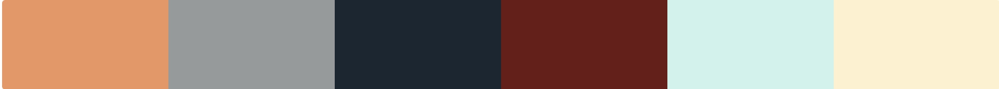
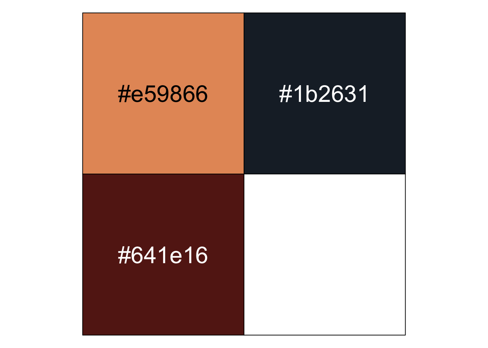

![]()
```{r}
minhas_cores <- function(...) {
cores <- c(
"laranja" = "#e59866",
"cinza" = "#979a9a",
"azul" = "#1b2631",
"vermelho" = "#641e16",
"agua" = "#d1f2eb",
"amarelo" = "#fcf3cf"
)
cols <- c(...)
if (is.null(cols))
return (cores)
cores[cols]
}
```Seguindo a regra de que se vc tiver que explicar alguma coisa mais de 3 vezes, então você deve escrever um post sobre o assunto. E considerando que neste caso, estou explicando para mim mesmo como definir cores no ggplo2, achei melhor escrever este post para me ajudar a lembrar destas informações na próxima vez que precisar delas.
Para escrever este post utilizei as seguintes referências: (Aden-Buie 2019), (Jackson 2018) e (Hall 2022).
Estou usando este site para buscar os códigos das cores. Vou utilizar a seguintes cores:

Definindo funções para lidar com cores
Vamos definir uma função para lidar com as cores que desejamos.
A função acima permite acesso às cores:
```{r}
minhas_cores("vermelho", "amarelo")
``` vermelho amarelo
"#641e16" "#fcf3cf" Podemos criar conjuntos diferentes de paletas de cores a partir das cores definidas na função minhas_cores.
```{r}
minhas_paletas <- function(palette = "main", ...) {
minhas_paletas <- list(
"main" = minhas_cores("laranja", "cinza", "vermelho", "amarelo"),
"highlight" = minhas_cores("agua", "azul", "amarelo"),
"two_colors" = minhas_cores("laranja", "vermelho")
)
minhas_paletas[[palette]]
}
```Isto permite selecionar um subgrupo de cores:
```{r}
minhas_paletas("main")
``` laranja cinza vermelho amarelo
"#e59866" "#979a9a" "#641e16" "#fcf3cf" Podemos usar a função scales::show_col para mostrar as cores de uma forma elegante:
```{r}
#| fig-cap: "paleta Main"
#| label: fig-main-palette
scales::show_col(minhas_paletas("main"), cex_label = 2)
```Usando as cores
Vamos utilizar as cores de Figure 2 em alguns gráficos.
```{r}
#| warning: false
#| message: false
library(tidyverse)
library(palmerpenguins)
```Podemos referenciar as cores com a função minhas_cores definida anteriormente. Aqui, utilizamos o atributo fill de geom_col para definir a cor de preenchimento das barras do gráfico.
```{r}
#| fig-cap: "Barras preenchidas por cor selecionada"
#| label: fig-pn-1
penguins <- palmerpenguins::penguins
penguins %>%
count(species) %>%
ggplot(aes(x = species, y = n)) +
geom_col(fill = minhas_cores("laranja")) +
labs(title = "Contagem de espécies") +
scale_y_continuous(expand = expansion(mult = c(0,0.1))) + # aumenta em 10% o eixo y positivo
theme_linedraw() +
theme(axis.ticks = element_blank(),
axis.title = element_blank(),
panel.grid.major.x = element_blank())
```Através da função scale_fill_manual podemos usar diferentes cores para cada espécie de pinguim.
```{r}
#| fig-cap: "Cores das barras atribuídas pela ordem alfabética das espécies"
#| label: fig-pn-2
penguins %>%
count(species) %>%
ggplot(aes(x = species, y = n, fill = species)) +
geom_col() +
scale_fill_manual(values = unname(c(minhas_cores("laranja", "azul", "vermelho")))) +
labs(title = "Contagem de espécies") +
scale_y_continuous(expand = expansion(mult = c(0,0.1))) +
theme_linedraw() +
theme(axis.ticks = element_blank(),
axis.title = element_blank(),
panel.grid.major.x = element_blank())
```No caso anterior as cores de cada espécie ficam dependentes da sequência com que as espécies são apresentadas - ordem alfabética - e da sequência das cores. Em alguns casos, gostaríamos que as cores ficassem atreladas às espécies específicas e não mudassem conforme a ordem dos atributos (o que é muito útil quando temos muitos gráficos) com os mesmos dados. Para isso, podemos associar cores às espécies nomeando um vetor com os nomes das espécies e os códigos das cores.
```{r}
#| fig-cap: "Vetor nomeado de cores"
#| label: fig-named-colors
penguins_colors <- minhas_cores("laranja", "azul", "vermelho")
penguins_colors <- setNames(penguins_colors, c("Gentoo", "Chinstrap", "Adelie"))
penguins_colors
scales::show_col(penguins_colors, cex_label = 2)
``` Gentoo Chinstrap Adelie
"#e59866" "#1b2631" "#641e16" 
e utilizar este array da Figure 5 com a função scale_fill_manual. As cores são atribuídas conforme nomeamos cada elemento do vetor de cores (por exemplo, “Adele = #641e16 (vermelho)”. Se não tivéssemos feito isso, o sistema primeiro atribuiria as cores conforme a ordem alfabética como no código anterior e depois montaria o gráfico conforme a ordenação do fct_reorder.
```{r}
#| fig-cap: "Usando o vetor nomeado"
#| label: fig-vetor-nomeado
penguins %>%
count(species) %>%
ggplot(aes(x = fct_reorder(species, desc(n)), y = n, fill = species)) +
geom_col() +
scale_fill_manual(values = penguins_colors) +
labs(title = "Contagem de espécies") +
scale_y_continuous(expand = expansion(mult = c(0,0.1))) +
theme_linedraw() +
theme(axis.ticks = element_blank(),
axis.title = element_blank(),
panel.grid.major.x = element_blank())
```Em alguns gráficos pode ser necessário termos mais cores do que as disponíveis na paleta de cores. É possível gerar novas paletas com um número maior de cores por interpolação através da função colorRampPalette. A função colorRampPalette devolve uma função para a qual passaremos o número de cores que gostaríamos de gerar a partir da interpolação das cores da paleta fornecida.
```{r}
#| fig-cap: "Usando _colorRampPalette_ para gerar paletas de cores maiores"
#| label: fig-pal-12
penguins_12_colors <- colorRampPalette(minhas_paletas("highlight"))(12)
scales::show_col(penguins_12_colors, cex_label = 1)
```Vamos colocar isto em uma função e testar.
```{r}
#| fig-cap: "Função que devolve função para gerar cores"
#| label: fig-gera-cores
penguin_pal <- function(palette = "main", reverse = FALSE, ...) {
pal <- minhas_paletas(palette)
if (reverse) pal <- rev(pal)
colorRampPalette(pal, ...)
}
scales::show_col(penguin_pal(palette = "two_colors", reverse = TRUE)(12))
```Considere o seguinte gráfico que usa uma escala contínua de cores:
```{r}
#| fig-cap: "Diagrama de dispersão"
#| label: fig-scatter1
penguins %>%
filter(!is.na(bill_length_mm),
!is.na(bill_depth_mm)) %>%
ggplot(aes(bill_length_mm, bill_depth_mm, color = flipper_length_mm)) +
geom_point()
```Gostaríamos de modificar a escala de cores utilizando as cores previamente definidas em minhas_cores e minhas_paletas.
Primeiro precisamos definir uma função que cria uma customização da função scale_color_continuous.
```{r}
#' Construtor de cores para escala contínua.
#'
#' @param palette nome da paleta definida em minhas_paletas
#' @param discrete Boolean indica se "color aesthetic" é discreto ou não
#' @param reverse Boolean indica se a paleta deve ter a sequência de cores invertida
#' @param ... outros parâmetros que serão passados para discrete_scale() ou
#' scale_color_gradientn(), uma das duas funções conforme o discrete é TRUE ou FALSE
#'
scale_color_penguin <- function(palette = "main", discrete = TRUE, reverse = FALSE, ...) {
pal <- penguin_pal(palette = palette, reverse = reverse)
if (discrete) {
discrete_scale("colour", paste0("penguin_", palette), palette = pal, ...)
} else {
scale_color_gradientn(colours = pal(256), ...)
}
}
scale_color_penguin(palette = "highlight", discrete = FALSE)
```<ScaleContinuous>
Range:
Limits: 0 -- 1Vamos ajustar o último gráfico que fizemos para utilizar uma paleta de cores baseada na minhas_paletas(“highlight”).
```{r}
#| fig-cap: "Escala de cores customizada gerada a partir da paleta específica"
#| label: fig-scatter-2
penguins %>%
filter(!is.na(bill_length_mm),
!is.na(bill_depth_mm)) %>%
ggplot(aes(bill_length_mm, bill_depth_mm, color = flipper_length_mm)) +
geom_point() +
scale_color_penguin("two_colors", discrete = FALSE)
```De forma similar à função color que fizemos, podemos implementar uma função para fill:
```{r}
#' Construtor de cores para escala contínua.
#'
#' @param palette nome da paleta definida em minhas_paletas
#' @param discrete Boolean indica se "color aesthetic" é discreto ou não
#' @param reverse Boolean indica se a paleta deve ter a sequência de cores invertida
#' @param ... outros parâmetros que serão passados para discrete_scale() ou
#' scale_color_gradientn(), uma das duas funções conforme o discrete é TRUE ou FALSE
#'
scale_fill_penguin <- function(palette = "main", discrete = TRUE, reverse = FALSE, ...) {
pal <- penguin_pal(palette = palette, reverse = reverse)
if (discrete) {
discrete_scale("fill", paste0("penguin_", palette), palette = pal, ...)
} else {
scale_fill_gradientn(colours = pal(256), ...)
}
}
``````{r}
#| fig-cap: "Cores de preenchimento geradas a partir de paleta específica"
#| label: fig-barchart
penguins %>%
filter(!is.na(bill_length_mm),
!is.na(bill_depth_mm)) %>%
ggplot(aes(bill_length_mm, bill_depth_mm, color = flipper_length_mm)) +
geom_col() +
scale_color_penguin("two_colors", discrete = FALSE)
```Este último gráfico não faz muito sentido, mas está aí apenas para exemplificar o uso da função scale_fill_penguin.
Referências
Aden-Buie, Garrick. 2019. “Custom Discrete Color Scales for Ggplot2.” https://www.garrickadenbuie.com/blog/custom-discrete-color-scales-for-ggplot2/.
Hall, Meghan. 2022. “Creating Custom Color Palettes with Ggplot2.” https://meghan.rbind.io/blog/2022-10-11-creating-custom-color-palettes-with-ggplot2/.
Jackson, Simon. 2018. “Creating Corporate Colour Palettes for Ggplot2.” https://drsimonj.svbtle.com/creating-corporate-colour-palettes-for-ggplot2.
Citation
BibTeX citation:
@misc{abreu2022,
author = {Marcos Abreu},
publisher = {github},
title = {Definindo Cores para variáveis discretas no ggplo2},
date = {2022-10-26},
url = {https://abreums.github.io/posts/Definindo-cores-no-ggplot2/},
langid = {pt-br}
}
For attribution, please cite this work as:
Marcos Abreu. 2022. “Definindo Cores para variáveis discretas no
ggplo2.” Definindo Cores para variáveis discretas no
ggplo2 (blog). github. October 26, 2022. https://abreums.github.io/posts/Definindo-cores-no-ggplot2/.